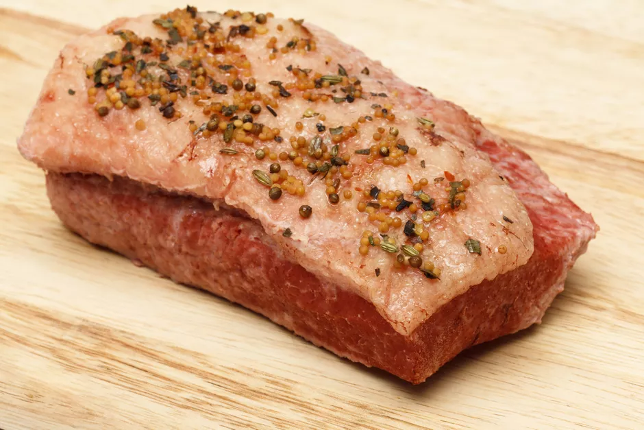

Corned Beef Recipe
Cooking your own corned beef at home is really easy just like Okra . All you need is
a cured corned brisket of beef, a big
pot and a few hours.
You can buy a prepackaged, uncooked corned beef brisket at the supermarket all year round, though they're
certainly in plentiful supply around St. Patrick's Day. You can also cure your own corned beef.
Some
butchers (the really good ones) will even cure a corned beef brisket for you.
You'll see that we specify placing the brisket in the pot fat-side-down because we want the meat to be
cooked
by the hot water, not by the flame underneath the pot— especially at the beginning when the heat is on
high.
It probably makes no difference either way, but that's just the way we do it.

Ingredients:
- 1 Kg cured corned beef brisket
- 2 cloves garlic
- slightly smashed
- thinly
- 2 bay leaves
- 1 tablespoon whole allspice
- 1 teaspoon whole cloves
Steps to Make It:
Follow these methods;
-
Preheat your oven to 250 F.
-
Remove the brisket from the brine, rinse thoroughly and set it fat-side down in a heavy pot or Dutch
oven. Cover with cold water and add the remaining ingredients.
-
Heat on the stove top, bringing the liquid almost to the point of boiling, then cover the pot and
transfer it to the oven for 3 hours.
-
You can add potatoes, carrots, and cabbage during the last 30 minutes of cooking. Or if you're making
corned beef for sandwiches or corned beef hash,
you can let it cool in its cooking liquid before
transferring it to the fridge. Be sure to slice it against the grain.
Click here for the lobster recipe;